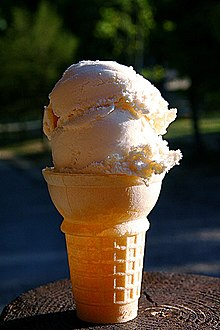

ვანილის ნაყინი - ნაყინი, რომლის ინგრედიენტებში ვანილის ბუმებრივი ან ხელოვნური ექსტრაქტი შედის. პოპულარულია ჩრდილოეთ ამერიკაში, ევროპასა და აზიაში როგორც ნაყინის სხვა სახეობები, გამოგონილი იქნა კრემის, შაქრის და სუნელის, ამ შემთხვევაში ვანილის ნაზავის ყინულის და მარილის შემცველ კონტეინერზე გაცივებით და ხანდახან არევით [2]. ვანილის სახეობა და, შესაბამისად, გემო განსხვავდება რეგიონის მიხედვით, მაგ. ირლანდიაში პოპულარულია ნაყინი ვანილის ანისულის მსგავსი მსუბუქი არომატით, ევროპის დანარჩენ ქვეყნებში და ამერიკაში კი უფრო ძლიერი, გამოკვეთილი გემო [3]. ვანილის ნაყინი ითვლება ნაყინის "ჩვეულებრივ" "უარაფრო" გემოდ [4].
 wikipedia